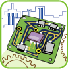

興趣類型
|
敘述
|
|---|---|
 ⼯程 |
這個類型的分數越⾼，代表你越喜歡運⽤科學的原理及準則進⾏產品製作及⼯程建造，並解決過程中所遭遇的問題，如建築物、⼤型⼯程與都市景觀之建造；或資訊、電⼦機械相關的事物，如電腦系統、機械設備規劃與開發等。 |
科學
|
這個類型的分數越⾼，代表你對⼤⾃然與物質，如海洋、礦物、光與電的變化現象等越感興趣，喜歡瞭解⽣物相關理論與疾病成因，如動植物的照顧培育或疾病治療、營養飲食設計與醫藥⽅⾯的知識；或對數學的推導證明感興趣。 |
商業
|
這個類型的分數越⾼，代表你喜歡說服與管理他⼈，對經營、貿易等使個⼈或組織能夠獲利之活動越感興趣，如擬訂⾏銷策略、管理解決成員間衝突，或對數字計算、查核等精確性事務感興趣，如整理財務狀況、分析市場需求等。 |
高度偏好學類 |
這些學類的學習內容與環境，較符合你目前的興趣投入方向與學習偏好，未來學習的動機與投入感可能較高。 |
|
|---|---|---|
| 1 | 自然學科學門
物理學類 |
在此學類可以學習到⼒學、電磁學、光學、熱⼒學、相對論、量⼦⼒學等知識。此學類多數學⽣喜歡研究物理現象與理論、設計與操作物理實驗，未來可從事物理相關的研究與教學。 |
| 2 | 工程學門
材料工程學類 |
在此學類可以學習到⾦屬、陶瓷、⾼分⼦、電⼦、⽣醫、奈米領域的材料相關知識。此學類多數學⽣喜歡運⽤物質的物理或化學特性，構思並開發出電⼦、機械或醫學等領域的適⽤材料。 |
| 3 | 工程學門
化學工程學類 |
在此學類可以學習到化學理論、化學⼯程原理、材料技術、化學反應⼯程、⽣化技術等知識。此學類多數學⽣喜歡應⽤化學的原理與技術，製造出各種在⽣活或⼯業中實⽤且安全的產品。 |
目前低偏好學類 |
你目前對這些學類的投入意願相對較低，若未來考慮相關方向，建議透過實際體驗與探索，進一步瞭解是否適合自己。 |
|
|---|---|---|
| 1 | 歷史與哲學學門
歷史學類 |
在此學類可以學習史學研究⽅法、專業歷史知識、歷史寫作等專業能⼒。此學類多數學⽣喜歡獨立思考，著重結合史地與⼈文科學。未來可從事專業史學家、歷史教師等⼯作。 |
| 2 | 外語學門
外國語文學類 |
在此學類可以學習各類外國語文在文學、政治、文化、經濟與研究等議題的⼝語表達與文字運⽤⽅式，並強化國際文化交流的能⼒。未來可從事外語教學、翻譯、國際貿易等⼯作。 |
| 3 | 政治學門
國際事務學類 |
在此學類可學習國際關係、國際經濟與貿易與⼤陸政經事務等知識。此類學⽣喜歡分析國際間往來原則、探討國際政經關係對臺灣的影響。可從事公職⼈員、外交事務或國際貿易事務⼈員等。 |
作答速度
|
|---|
分化指標
|
|---|
| 溫馨提醒 | 測驗結果僅供參考，幫助你更了解自己。 選擇未來方向時，請一起考量自己的能力、興趣、價值觀與未來發展。 有疑問時，歡迎和老師、家長或信任的人聊聊，一起找到更適合你的方向！ |
|---|